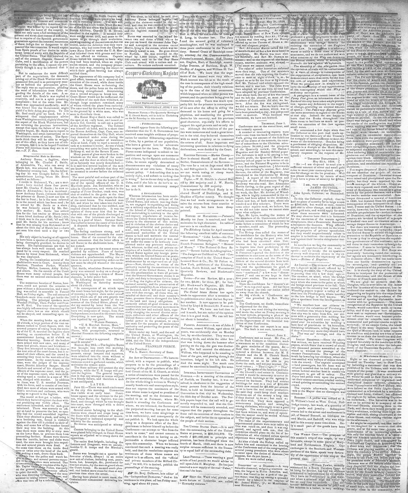

1 e cently, however, he has been making for midable preparations
https://www.loc.gov/resource/sn85059716/1854-06-07/ed-1/?sp=2

See the original pageVer la página original
Based on the provided excerpt, the newspaper reported that after desisting in 1850 due to international interposition, an unspecified "savage despot" is making formidable preparations for another invasion of Dominica. The article argues that the United States must protect the Dominican Republic and defeat French annexation schemes, noting that France is allegedly intriguing for its conquest, interfering in its domestic affairs, and possibly holding the peninsula of Samaná. It further expresses approval that Mr. Douglas has introduced a matter to the Senate to inquire about recognizing Dominica's independence and opening diplomatic intercourse.
Conforme al fragmento inserto, el rotativo denunció que, tras contenerse en 1850 merced a la mediación de las potencias, un «tirano despótico» promovía considerables aprestos bélicos con el propósito de consumar una nueva invasión contra la República Dominicana. El artículo exhortaba a Estados Unidos a tutelar a los dominicanos y desbaratar las ambiciones anexionistas de Francia, aseverando que ésta conspiraba para sojuzgar el país, se inmiscuía en su política interna y retenía potencialmente la península de Samaná. Aplaude además la iniciativa presentada en el Senado por el legislador Douglas para dilucidar el reconocimiento de la independencia dominicana y el establecimiento formal de relaciones diplomáticas.
Where this standsEn qué punto está
The full text of this article is still being prepared. Until it is ready, this page carries a summary, the passage found on the page, and the link to the original, which is always one click away.El texto completo de este artículo aún se está preparando. Hasta que esté listo, esta página lleva un resumen, el pasaje encontrado en la página y el enlace al original, que siempre está a un clic.
The passage this summary was written fromEl pasaje del que se escribió este resumen
The passage where this article was found, copied from the newspaper page itself, reading errors and all. This is exactly what the summary above is based on.El pasaje donde se encontró este artículo, copiado de la propia página del periódico, con sus errores de lectura y todo. Esto es exactamente aquello en lo que se basa el resumen de arriba.
in 1850, but desisted from his purpose in
consequence of the interposition.of Eng
land, France and the United States. 1 e
cently, however, he has been making for
midable preparations for nolhcr invasion
of Dominica; and the sympathies of the
country are invoked in behalf of a people
of kindred race and civilizatibn whom a
savage despot dooms to destructions
But there are reasons of Stated which
no less than feelings of sympathy, impel
1 he Uniied Stales to extend all legitimate
protection 10 the Republic ol Doininioa.?
It is our p >licy to strengthen.'tlie .republi
can governments of tliis continent, and to
aid litem in their resistance to'foreign do
mination. Fiance is intriguing, for the
conquest of Dominica: Heri fleets are
constantly hovering round tho country,
her agents are incessantly interfering in
its domestic affairs. She has made'more
than one hostile demonstration against
its sovereignty, and possibly- she yet
holds possession of the peninsula of Sama
na. It is clearly the duty of the Uniied
Slates to interpose for the protection' of
ihe Dominicans, and Lhe duleat of' this
scheme of French annexation.
We are glad to- perceive that Mr.
Douglas, who is ever alive to the honor
and the interests of the country, has in
troduced the matter to the Senate by
suggesting an inquiry into the expediency
of recognizing the independence of Do
minica and of opening diplomatic inter
course with its government. The mere
recognition of the Republic by the Uniutd
Slates, would contribute much, to its sta
How to cite this articleCómo citar este artículo
Cooper'S Clarksburg Register. (1854). Clarksburg, Va. [W. Va.], June 7, 18547 de junio de 1854. DR in the American PressRD en la Prensa Norteamericana. Library of Congress, Chronicling America: https://www.loc.gov/resource/sn85059716/1854-06-07/ed-1/?sp=2
ReferencesReferencias
Library of Congress, Chronicling America: Cooper'S Clarksburg Register, June 7, 18547 de junio de 1854.
Send an observationEnviar una observación
Does this article connect with your family, your town, or something you know? Did we get something wrong? Write to us. Observations go to the editor's inbox and are read by a person.¿Este artículo conecta con su familia, su pueblo o algo que usted conoce? ¿Nos equivocamos en algo? Escríbanos. Las observaciones llegan al buzón del editor y las lee una persona.
Send observationEnviar observación